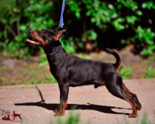

Dog
The dog is a domesticated descendant of the wolf. Also called the domestic dog, it is derived from the extinct Pleistocene wolf,[6][7] and the modern wolf is the dog's nearest living relative.
Cat
The cat (Felis catus) is a domestic species of small carnivorous mammal.[1][2] It is the only domesticated species in the family Felidae and is commonly referred to as the domestic cat or house cat to distinguish it from the wild members of the family.